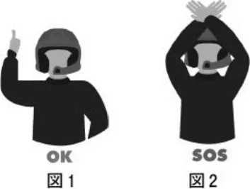
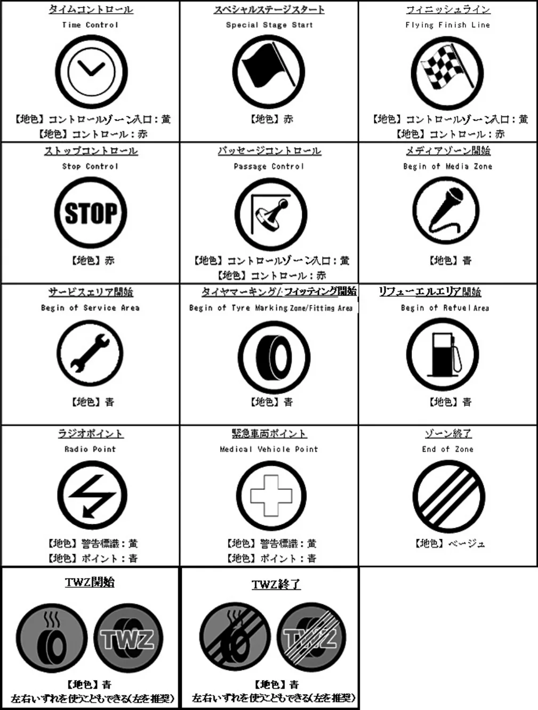
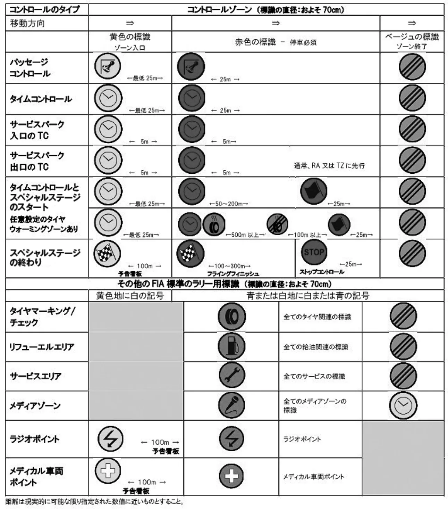
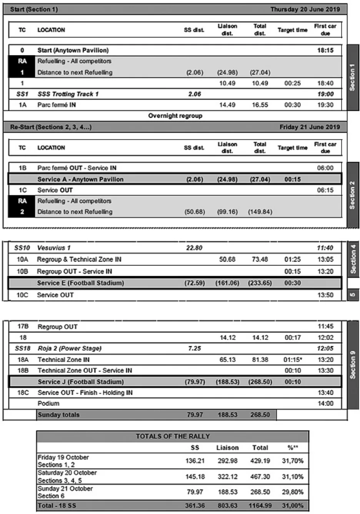
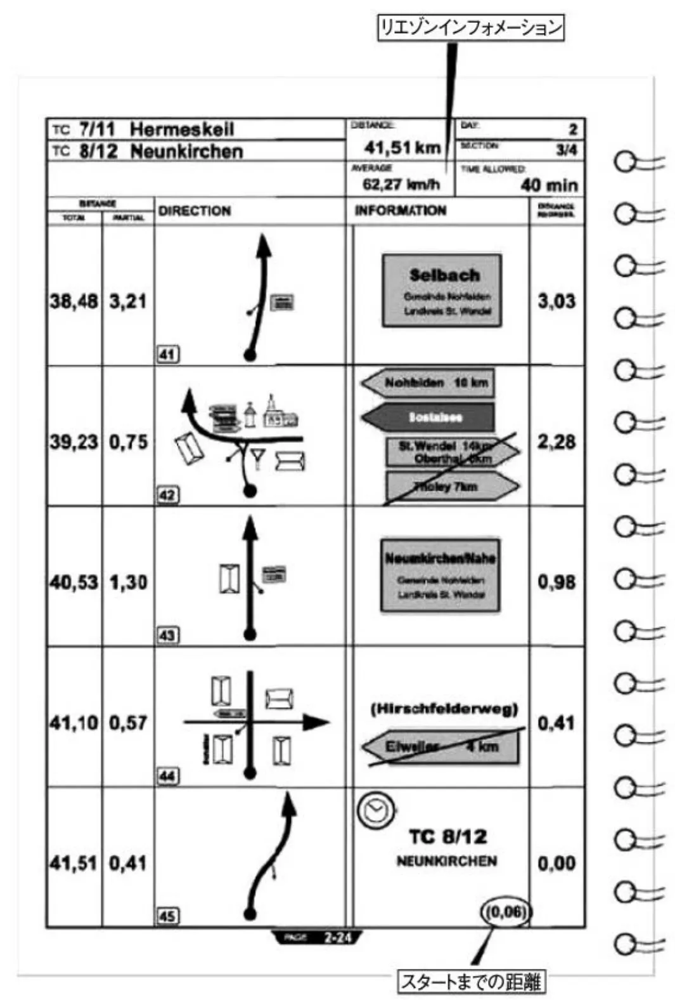
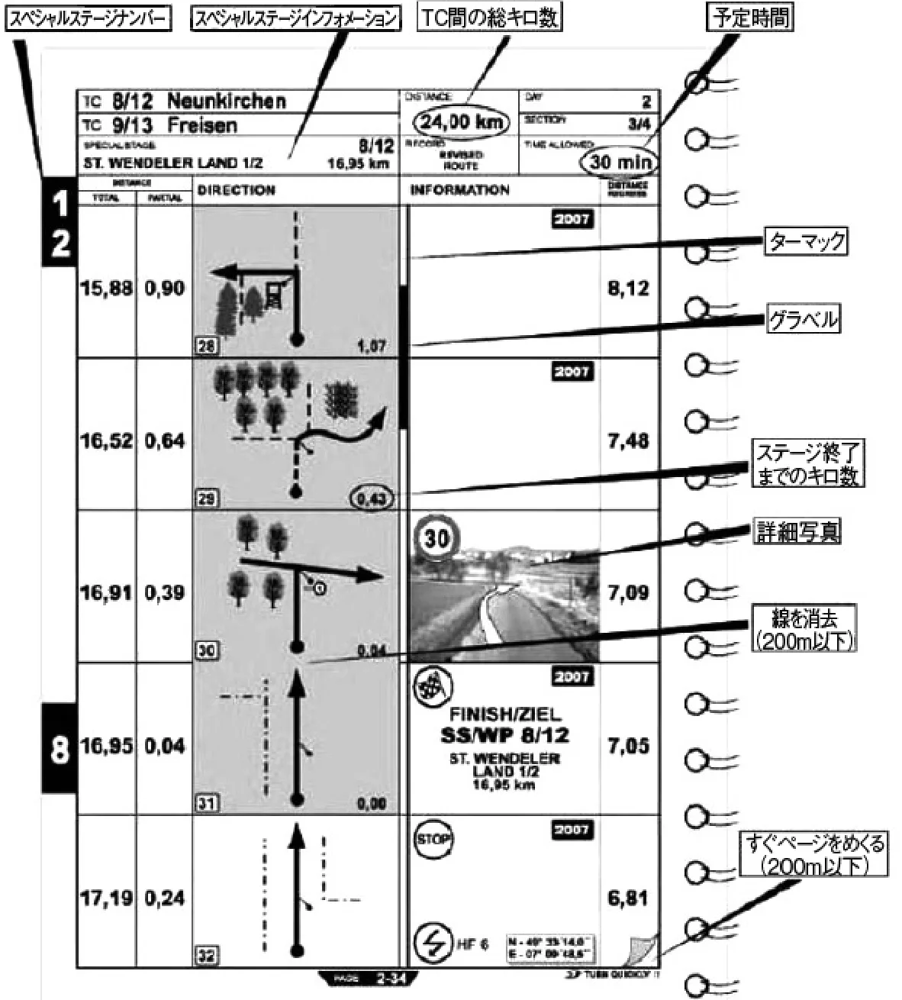
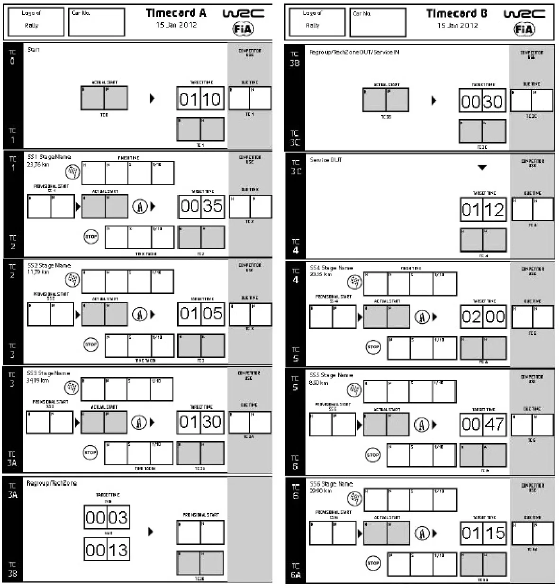

ラリー競技開催規定細則スペシャルステージラリー開催規定
JAF の公式サイトではありません。JAF が公開する PDF を自動変換した非公式の検索用アーカイブです。記載内容は必ず JAF の原本 PDF で出典をご確認ください。 検索と AI 質問つきのビューアで開く
この文書には自動変換で完全に読み取れなかった箇所があります。
P.1ラリー競技開催規定細則：スペシャルステージラリー開催規定
２００６年 ３月２８日制 定２００６年 ６月 １日施 行２００７年 ８月 １日改 正２００８年 １月 １日施 行２００８年 ７月３１日改 正２００８年１１月２７日改 正２００９年 １月 １日施 行２０１２年 ７月２６日改 正
２０１３年 １月 １日施 行２０１４年１１月２７日改 正２０１５年 １月 １日施 行２０１６年 ３月２４日改 正２０１６年 ４月 １日施 行２０１７年 ７月２７日改 正２０１８年 １月 １日施 行２０１８年 ７月２５日改 正
２０１９年 １月 １日施 行２０２０年 ７月３０日改 正２０２１年 １月 １日施 行２０２１年 ７月２８日改 正２０２１年 ７月２８日施 行２０２２年 １月 １日施 行２０２２年 ８月３１日改 正２０２３年 １月 １日施 行
２０２３年１２月 １日改 正2024年 1月 1日施 行2025年 2月17日改 正2025年 2月17日施 行2025年11月27日改 正2026年 1月 1日施 行
ラリー競技開催規定第２条に従い、スペシャルステージラリーに適用する規定を以下の通り定める。
第１章 総則
第１条 定義
１）ラリー競技の開始（BEGINNING OF THE RALLY）：ラリーは、参加確認あるいはレッキ（いずれか早い方）で開始する。ラリーの競技要素は、最初のタイムコントロールで開始する。
２）ラリー競技の終了（END OF THE RALLY）：ラリー競技は、最終公式順位認定の掲載をもって終了する。ラリー競技の要素は、最終タイムコントロールで終了する。
３）公式通知（Bulletin）：ラリーの競技会特別規則を修正、明確化あるいは補足完成するための公式な書面による通知。
４）コミュニケーション（Communication）：競技長あるいは競技審査委員会のいずれかにより発行される、情報提供の公式な書面による通知。
５）クルー：オーガナイザーに参加を認められた、参加資格を満たすドライバー及びコ・ドライバーのこと。フレキシサービスなど認められた場合を除き、レッキおよび競技において競技車両に搭乗して参加できるのはクルーのみである。本規則および特別規則書の定めに従ってコ・ドライバーを変更する場合、競技会審査委員会によって正式に認められるまではクルーとはみなされない。競技会にレッキのみの参加を認められた場合、この者はレッキに関してはクルーに準じるものとして扱われる。
６）公式掲示板：公式文書および参加者への指示や公示、競技の結果成績等を掲示する場所で、物理的又は電子的のいずれであってもよいが、両者を併用する際は、その掲示内容に差異があってはならない。設置場所は特別規則書に明記するか、その他の方法で参加者またはクルーに必ず伝達しなければならない。
公式掲示板には、公式通知以外のコミュニケーションやリストなど参加者またはクルーに対して周知する必要のある他の情報も掲示することが認められるが、公式通知かそれ以外の情報であるかが明確に判別できるよう掲示すること。
７）コントロール：参加車両の通過または通過時刻の確認を行う場所で、下記の種類がある。
（１）タイムコントロール：参加車両の到着時刻を記録する地点。
（２）スペシャルステージのスタートコントロール：スペシャルステージのスタート時刻を記入する地点。
（３）スペシャルステージのフィニッシュコントロール：スペシャルステージのフィニッシュ時刻を記録する地点。ただし、タイムカードへの実際の記入は同じコントロールゾーン内にあるストップポイントで行う。
（４）パッセージコントロール：参加車両の通過確認を行う地点。
８）コントロールゾーン（CONTROL ZONE）：最初の黄色地の警告サインとベージュ色または黄色に３本の横断線の入った最終サインまでの場所がコントロールゾーンとみなされる。
９）参加確認：特別規則書に定めるラリースケジュールに明記された、参加者から必要書類の提出を受け内容を検査し、参加の最終確認を行うこと。この際に参加者が提出・提示を求められる書類・証明書等は競技会の特別規則書にて定めることとする。
10）タイヤマーキングゾーン：ラリーの競技要素の期間内において技術委員が、競技車両が装着あるいは搭載するタイヤにマーキングを行う、または識別記号を読み取るなどの方法で、タイヤの確認を行うためのゾーン。 別添１に示
P.2す標識によりその開始と終了地点を標示し、その位置はロードブックに掲載していなければならない。特別規則書に定めることで、オーガナイザーに登録されたサービス員１名をタイヤマーキングゾーンに立ち入らせ、その作業を補佐することが認められるが、タイヤマーキングに関係する作業以外を行うことは禁じられる。
11）チーム：競技参加者、クルーおよびオーガナイザーに登録されたサービス員を指す。参加者はチームの全員に競技に関する規則を守らせる義務を負うが、オーガナイザーに登録されていない当該チームの関係者がいる場合には、チーム構成員に準ずる者としてこの義務の対象に含まれる。ラリー競技の期間中のチームおよびチーム構成員に準ずる者の行動に対しては、参加者とクルーは連帯してその責任を負う。
12）フレキシサービス：アイテナリー上で定める、前後をリグループに挟まれたサービスのことで、同一参加者のサービス員が複数車両のサービスを行う際に、作業時間帯を分散させることで作業負荷を軽減する、あるいは必要とされるサービス員の人数を削減するために設けられる。
13）リタイヤ：何らかの理由で競技が続行できなくなった場合に、競技から正式に離脱することを指す。参加者またはクルーが書面にて競技役員に申し出る場合と、規則に従って対象クルーに対し競技長が宣告する場合がある。
14）リフューエルエリア（RA）：アイテナリー上で定める、競技中に燃料補給が認められる場所。別添１の標識にてその開始と終了地点が標示される。本エリアにはクルー及び担当競技役員のみが立入ることができるが、特別規則書にて定める場合、その条件に従い立入が認められる。本エリアでは給油作業以外を行ってはならない。
15）レッキ（RECONNAISSANCE）：スペシャルステージの下見のことをいい、ドライバー、コ・ドライバーはレッキスケジュールに従いスペシャルステージを走行すること。
16）レグ（LEG）：夜間リグループ（オーバーナイトリグループ）により分けられるラリーの各競技部分。第１レグの前の夜にスーパースペシャルステージが行われる場合、それは第１レグの第１セクションと見なされる。
（１）１つのレグにおける各クルーの運転時間は合計18時間を超えないこと。
（２）１つのレグの終了から次のレグの開始までの間は、６時間以上のレストタイム（停車時間）が設定されなければならない。なお、競技中の連続走行時間（１回が連続10分以上の運転の中断をすることなく、連続して運転する時間）は、最長２時間を目安とし、設定することを推奨する。
17）セクション：リグループで区切られる競技区間の単位。
18）ロードセクション：主として移動を目的とした走行に充てられ２つの連続するタイムコントロールで区切られた区間、もしくはスペシャルステージスタートとそれに続くタイムコントロールで区切られた区間を指す。
19）リグループ：参加車両の隊列を整えることを目的として設定される停車をいう。リグループを行う場所は、出入り口にタイムコントロールを設けてパルクフェルメの状態を保たなければならない。その停車時間はクルーによって異なってもよい。
レグの最後に置かれるリグループで、それが次のレグの最初のタイムコントールまで続く場合、これをオーバーナイトリグループと呼ぶ。
20）ニュートラリゼーション：何らかの事由によりオーガナイザーが参加車両を停車させること。この停車時間は競技時間に算入されない。その場所にはパルクフェルメの規則が適用される。
21）パルクフェルメ（PARC FERMÉ）：車両への一切の作業、検査、調整あるいは修理が、本規則、あるいはラリー競技会特別規則により明確に許されている場合以外許可されず、許可を受けた競技役員だけがその実施を認められる領域。
22）禁止されるサービス（PROHIBITED SERVICE）：競技車両に車載されている物以外の、製造物（オーガナイザーにより供給される場合以外の固体あるいは液体）、スペアパーツ、工具あるいは器具をクルーが使用あるいは受領することができない。
23）タイムカード（TIME CARD）：アイテナリーの中で予定されている様々なコントロールポイントで記録されたタイムを記入するためのカード。
24）メディアゾーン（MEDIA ZONE）：サービスパークあるいはリグループの入口のタイムコントロール手前で、メディアのために設定されたゾーン。
25）テクニカルゾーン（TECHNICAL ZONE）：２箇所のタイムコントロールで区切られた、車検員による技術検査を実施する目的のゾーン。
26）ラジオポイント：スペシャルステージ内走行中の競技車両の走行状況を把握し、事故発生時の効率的な救助活動を目的に、スペシャルステージ内に設置される地点。この地点では、通過確認（トラッキング）要員と緊急時要員が配置され、連絡用無線が設置される。また、赤旗が準備され、競技長の指示により赤旗が提示される場合がある。スペシャルステージ内にて赤旗が提示されるのはスタートを除きこの地点のみである。
P.327）トラッキング：
ラリー競技において競技を円滑かつ安全に進行するため、オーガナイザーがラジオポイント等のステージに沿って配置した競技役員からの報告、および可能な場合は通信等を用いる機器・電子システムを用いて、スペシャルステージにおけるすべての競技車両のおよその位置および状態を追跡すること。
28）スーパースペシャルステージ（SUPER SPECIAL STAGE）：本規則に述べられ、ラリー競技会特別規則に詳細のあるスペシャルステージの変化形でアイテナリーに記載される。
第２条 統一書式
オーガナイザーは、アイテナリー、ロードブックおよびタイムカードを作成しなければならず、別添の推奨様式に従うことが望ましい。
１．アイテナリーおよびロードブック：オーガナイザーは、レッキ開始前までにすべてのクルーにアイテナリーが含まれたロードブックを配布すること。推奨様式については別添３を参照のこと。クルーはアイテナリーとロードブックに必ず従うこと。オーガナイザーは、迂回ルート（オルタネートルート）を予めロードブックに記載しておくか、ロードブックと同時に配布すること。
２．タイムカード：オーガナイザーは、行程上に設けられた各コントロール（第22条．参照）で計時記録の記入および押印または署名を行うためのカードを用意しなければならない。少なくとも各セクションごとに別々のタイムカードのセットを発行することとする。また必要に応じてパッセージコントロールで押印または署名を行ってもよい。なお、タイムカードに記入を行うことができるのは担当競技役員に限るものとし、クルーはクルー使用欄以外に記入を行ってはならない。
推奨様式については別添４を参照のこと。
第３条 特別規則書
特別規則書には、国内競技規則４−８のほか、少なくとも次の事項を明示すること。
１．ラリー概要：下記の事項を明記すること。
１）開催日程および開催場所
２）競技会本部の所在地、レイアウト図、電話番号、開設および閉鎖日時
２．競技内容：下記の事項を明記すること。
１）本規定に従ったスペシャルステージラリーであること。
２）スペシャルステージの路面の種別（舗装路面、非舗装路面および積雪路面等）。
なお、第３章で述べられている事項については、特別規則書に改めて記載する必要はないが、記載する場合は文言および内容を変更しないこと。
３．競技距離：スペシャルステージの合計距離および総走行距離
４．クルーおよび参加車両の変更に関する下記の事項
正式参加受理後のクルーの変更は認められない。ただしコ・ドライバーおよび参加車両については、ラリー競技開催規定細則：スペシャルステージラリー開催規定第６条に定める条件において認めることがある。
【※変更を認めない場合は特別規則書にこの事項を含める必要はない】
５．ラリースケジュール：下記の事項を含むこと。
１）参加申込の開始日時
２）参加申込の締切日時
３）レッキの受付日時および実施日時
４）参加確認の日時
５）公式車検の日時
６）審査委員会の日時
７）ドライバーズブリーフィングの日時
８）各レグのスタートリスト発表の日時
９）暫定結果の発表日時
10）表彰式の開催日時
６．暫定のアイテナリー
７．その他当該競技会で適用される追加規則
P.4第４条 公式書類
・公式通知
特別規則書の内容への追加または訂正は公式通知によって行うことができる。公式通知は特別規則書を補完するものであり、特別規則書の一部と見なされる。公式通知を発行する場合は、発行日時、通し番号、発行者および宛先を明記し、定められた場所に掲示すること（その場所は予め確実に参加者またはクルーに伝達すること）。状況によっては参加者またはクルーに直接伝達あるいは配布しても良いが、この場合は必ず参加者またはクルーから確認の署名を得ること。公式通知は掲示する場合も含めてすべて黄色い用紙を使用すること。
・ラリーガイド
このガイドの概念は、メディア、競技役員および競技運営関係者あるいは競技参加者いずれもが、１つの書類で書類事務作業を済ませられるようにしようとするものである。ラリーガイドは、ラリースタートの少なくとも３週間前に電子的書類として発表することができる。ラリーガイドの印刷版作成はオーガナイザーの任意である。
・エントリーリスト
競技会特別規則にあるエントリー締め切り次第、オーガナイザーは、以下の内容を含めエントリーリストとして発表すること。
−競技車両番号
−競技参加者のフルネーム名
−ドライバー／コ・ドライバーの氏名（競技運転者許可証に記載された氏名をアルファベット、カタカナ、平仮名、または漢字表記したもの）
−エントリーする車両名と車両型式
−エントリーする車両のクラス
・スタートリスト
スタートリストは、競技会審査委員会の承認の後、競技長が署名し、競技会特別規則に決められている時刻に発表される。
第５条 参加車両
１．本競技に参加できる車両は次の通りとする。
１）国際格式競技：ＦＩＡ国際モータースポーツ競技規則付則Ｊ項のグループＮまたはグループＡ規定に従った車両。
ＦＩＡ国際モータースポーツ競技規則地域ラリー選手権規定に従った車両。
２）国内格式競技以下：
（１）ＪＡＦ国内競技車両規則第２編ラリー車両規定に従ったＲＲＮ車両、ＲＪ車両、ＲＰＮ車両、ＲＦ車両またはＡＥ車両。
（２）ＲＲＮ車両を除くＦＩＡ公認車両
ただし、当該車両は全日本選手権に限り参加可能とし、臨時運行許可証および番号標を有している場合、当該許可における運行目的は当該車両が参加するラリー競技会への参加でなければならず、かつ、運行期間は当該競技会に有効なものでなければならない。
（３）ＦＩＡ公認車両またはＪＡＦ登録車両で、2002年12月31日以前に運輸支局等に初度登録され、かつ2002年ＪＡ Ｆ国内競技車両規則第３編ラリー車両規定に従った車両（ＲＢ車両）。
（４）上記（１）の車両に対し、ＪＡＦ国内競技車両規則第２編ラリー車両規定第２章安全規定第２条、第３条および第４条に定められた安全装備を夫々装着しなければならない。ただし、スペシャルステージがＪＡＦ国内スピード競技公認コースにおいて実施される場合はこの限りでない。
２．ＦＩＡまたはＪＡＦの認定する選手権競技を除き、オーガナイザーは特別規則書に規定することにより、各車両規定で認められている改造範囲をさらに制限することができる。
３．オーガナイザーは特別規則書に規定することにより、競技会で使用できるタイヤの本数および仕様を規制することができる。
４．外国登録自動車を一時輸入してラリー競技に使用する場合は、道路交通に関する条約（1949年、ジュネーヴ）等で規定されている要件を満たしていること。
P.5第６条 クルーおよび参加車両の変更
１）正式参加受理後のクルーの変更は認められない。ただしコ・ドライバーおよび参加車両については、参加者から参加確認受付終了あるいはレッキ受付終了（いずれか早い方）までに理由を付した文書が提出され、競技会審査委員会がやむを得ない理由であるとして、その変更を認めた場合はこの限りではない。
この承認を受けるまでは、変更後に参加が予定されるコ・ドライバーおよび車両でのレッキ等への参加や車両検査を受けるなどの大会への参加は認められない。
また、この承認以降は当初のコ・ドライバーおよび車両は以後当該競技会への参加は認められない。
競技長は、競技に参加せず、レッキのみへの参加を認めることがある。この場合は車両１台、クルー２名を１単位として、競技長が定める期限までに書面にて申請を行い、承認を受けなければならない。
また、やむを得ない理由により正式参加受理されたコ・ドライバーがレッキに参加できない場合、クルーの変更と同様の手続きによりレッキのみを行う代理のコ・ドライバーの申請を行うことができるが、競技会審査委員会が認めた場合に限り本措置が適用される。これは例外的な救済措置であり、参加受理された以外のコ・ドライバーをレッキに参加させることを主たる目的として濫用してはならない。
レッキのみへの参加を認められたクルーは、大会に適用される規則のうち、レッキに関する全ての条項に従わなければならず、違反した場合には競技長または競技会審査委員会により罰則が科せられる場合がある。
２）参加クラスの変更を伴う参加車両の変更は認められない。
第２章 競技運営
第７条 競技会本部（ヘッドクォーター）
１．競技会期間中は競技会本部（ヘッドクォーター）を設置すること。
２．競技中はラリーコントロールを中心とした十分な連絡体制を敷くこと。とくに事故処理、救急に関するものについては万全の措置を講じること。
３．必要な決定を遅滞なく行うため、競技会審査委員と競技長は、適切な通信手段等を用いて常に連絡が取れる状態でなければならず、また競技会審査委員のうち少なくとも１名は競技会本部付近に待機していなければならない。
第８条 競技の設定
１．ロードセクションの目標所要時間の設定は、一般交通の用に供されている道路について、その道路の速度制限に従い、かつ瞬間的にもその道路の制限速度を超えないように設定すること。
山間部およびカーブの多い道路では、クルーの安全に留意し、ミスコースを誘発するようなコース設定ならびに競技運営を行わないこと。また、要所には中間連絡車または監視役員を配置すること。
２．サービスパーク、リグループおよびパルクフェルメは道路以外で十分な駐車スペースを有する場所に設けること。
３．競技の開催前に複数回の試走を行うこと。
４．コースの距離測定に際して、高速自動車国道等の距離表示を基準距離とすること。
５．特別規則書に記載された競技方法は、いかなる場合も競技会審査委員会の承認なしに変更してはならない。
第９条 スペシャルステージの開催運営基準
以下を満たすこと。ただし、※を付記した項目については、地方競技以下（地方格式、クローズド格式）については強く推奨とする。
１．コースと安全
（１）各コースは、原則として舗装路面（アスファルト、ターマック等）、未舗装路面（グラベル等）、または積雪路面（氷結路面を含む）のいずれかで設定されなければならない。また異なる路面のスペシャルステージを組み合わせる場合は（ミックス路面を含み）、参加者に事前に情報を告知すること。
（２）開催については、下記事項を満足しなければならない。また、国際格式競技については国際モータースポーツ競技規則付則Ｈ項にも従わなければならない。
１）コースは競技関係者以外には確実に遮断されていること。
２）コースは、安全性を考慮し適切な場所に設定すること。
P.6３）※国際モータースポーツ競技規則付則Ｈ項を参考に緊急事態に備えた「セーフティプラン（緊急時マニュアル）」を作成し、関与する競技役員に緊急時の対応を周知徹底すること。
４）スタートからフィニッシュまでの主要な箇所に通過確認（トラッキング）、連絡用無線を設置したラジオポイントを必ず設けること。
※このラジオポイントは約５km毎に少なくとも１ヵ所設置しなければならない。
５）ラジオポイントには通過確認（トラッキング）要員と緊急時要員を配置し、赤旗を準備しておくこと。
※消火器（３kg以上）を備えることとする。
６）※スタート地点には緊急時に対応し以下のものを配置すること。
−緊急用車両
−医師または救急救命措置の行える者（全日本選手権では医師が望ましい）
−消火器（４kg×２本相当以上）
−大会本部との連絡機器
−赤旗
コースが15kmを越える場合には中間地点（ミッドポイント）には緊急時に対応し以下のものを配置すること。
−緊急用車両
−医師または救急救命措置の行える者
−消火器（４kg×２本相当以上）
−大会本部との連絡機器
７）※ストップ地点には緊急時に対応し以下のものを配置すること。
−消火器（４kg×２本相当以上）
−大会本部との連絡機器
８）※緊急用車両は、参加車両から救出するのに必要な機材を積載した車両と、負傷したクルーを搬送できる車両の２台体制であることが望ましい。
９）開催場所の周辺には救急病院（外科、脳神経外科、整形外科、救命救急センター等）があり、競技会当日の受け入れ体制が確立されていること。
10）開催場所に観衆（観客）を入れる場合は、その安全確保に十分留意しなければならない。とくに、ＪＡＦ公認レーシングコースおよびＪＡＦ公認スピード競技コース（２級以上）以外の場所に観衆を入れる場合には、公認コースに準じた十分な防護対策を講じなければならず、ＪＡＦの確認（査察等）を受けること。
２．観客の安全・コントロール
１）観客に警告を促すために、８）の手段を適用すること。必要であれば、危険なエリアに侵入しているいかなる人物も排除すること。
２）※危険な場所はセーフティプランに盛り込むこと。オーガナイザーは、セーフティプランに示されている危険なエリアをはっきりと示すこと。それはまた観客の到着前に行うこと。
３）競技長は、救急委員長の推奨事項（ＦＩＡ国際競技規則Ｈ項参照）を考慮することとする。また、万一危険な状況の場合にはスペシャルステージを中止できるよう、００カー、０カーの乗員（および審査委員会）の推奨事項も考慮することとする。
４）競技中（００カーが通過後、スイーパーカーが通るまで）一般観客は、競技に使われる道路沿いに移動することを禁止する。
５）競技中に観客の安全を確保するため、十分な人数の競技役員又は警備員を配置しなければならない。
６）競技役員は、役務担当者であることが明確に視認・確認できるように、ジャケットまたはタバード等を身に付けること。
７）スペシャルステージは、観客が安全に移動できるような場所、および時間を設定すること。
８）インフォメーション（安全に対する告知）
観衆向けのインフォメーションはさまざまな方法で伝えること。
−印刷物、呼びかけ、およびテレビ報道
−ポスター提示
−パンフレットの配布
−拡声器装備車両（コースインフォメーションカー）の競技ルート通過により観衆に告知する（最初の車両がスタートする45分から１時間前が推奨される）。この車両は、拡声器装備のあるヘリコプターに替えることがで
P.7きる。この運用は必要に応じて何度も繰り返すことができる。
３．上記１．および２．に加え、必要に応じて国際モータースポーツ競技規則付則Ｈ項に準拠した準備や対策を追加すること。
第10条 競技役員
１．各コントロールのタイムカードの記入者は公認審判員資格Ｂ３級以上の所持者でなければならない。（クローズド格式競技を除く。）
２．計時を担当する競技役員は、事前に計測器具などの点検を行い、正確かつ公正な計測および判定を行わなければならない。
３．ＪＡＦオブザーバーは、ラリーのすべての局面を再考し、適切な報告書式を完成する。
４．コンペティターズリレーションズオフィサー（ＣＲＯ）の第一の任務は、競技参加者／クルーに対し、規定およびラリーの運営に関連する情報あるいは解説を提供することである。ＣＲＯは、競技参加者／クルーが容易に確認できなければならず、ＣＲＯスケジュールにしたがっていること。
第11条 参加確認および参加車両検査
１．参加者に対し、少なくとも下記の書類の提示を義務づけ、その記載内容を確認すること。その確認の際は、１）および２）の本人確認のため、クルーが立ち会わなければならない。
１）すべてのクルーの自動車運転免許証。オーガナイザーが電子的な運転免許証の提示を認める場合、読み取り手段を用意し、確認の場で読み取りを行って提示し、内容の真正性を証明する義務は参加者が負う。画面コピー等の写しの提出や提示は認められない。
２）すべてのクルーの競技運転者許可証
３）競技参加者許可証
４）自動車検査証
５）自動車損害賠償責任保険証
６）ラリー競技に有効な対人賠償保険証（または共済等）および搭乗者保険証（または共済等）
７）臨時運行許可証（臨時運行許可申請書） ※必要な場合
８）自動車カルネおよび登録証書 ※必要な場合
２．オーガナイザーは、車両申告書、車両検査チェックリスト等を適宜作成し、出走前に第５条に記載された車両規定への適合性を検査すること。また、ヘルメット等の安全装備品の確認を行うこと。
３．オーガナイザーは、タイヤの本数および仕様を規制するため、あるいは参加車両またはその構成部品の同一性を確認するため、これらにマーキングや封印等を施すことができる。マーキングや封印の実施については、特別規則書に明記しなければならない。参加者はこれらのマーキングや封印等を当初通り保持する責任を負う。
４．すべての参加車両は、定められた時刻に車両検査を受けなければならない。
５．参加者は車両検査において自己の参加車両が車両規定に合致していることを証明できる書類を持参しなければならない。これらを持参していない場合、オーガナイザーの判定に対して異議を唱えることはできない。
６．競技会審査委員会は、規則に不適合な箇所が発見された参加車両に対し、規則に合致させるための限られた修復時間を与えることができる。
７．オーガナイザーは競技会期間中、任意に参加車両の追加検査または追加確認を行うことができる。参加者は競技会期間中、常に各自の参加車両の適合性について責任を持つものとする。
８．各クルーは、競技の最終コントロール通過後ただちに参加車両をパルクフェルメに進入させ、下記の確認を受けること。
①出走前に車検を受けた車両と同一であること。
②罰則の対象となる要因の有無。
③マーキング、封印等を実施した場合は、それらが保持されているかどうか。
９．出走前の車両検査において競技の公正性または公平性に関わる箇所の確認を実施しなかった場合、オーガナイザーは競技終了後任意の上位入賞車両についてこれらの箇所に関する検査を行わなければならない。
10．出走前の車両検査に持ち込まれた車両が、エントリーしたクラスに適合しない場合、競技長の提案により、競技会審査委員会はその裁量で当該車両を当該選手権外の、技術委員長が薦める適切なクラスに移すことができる。但しこの場合、参加費等の増加が生じた場合はその支払いを条件とし、減少の場合は差額の払い戻しは行わないものとする。
P.8また、当該車両とそのクルーは移動先のクラスの参加資格を完全に満たしていなければならず、その走行は臨時運行許可に基づくものであってはならない。
11．競技終了後、競技会審査委員会または競技会技術委員長が必要と判断した場合、もしくは抗議の内容により必要とされる場合、オーガナイザーは分解を伴う再車両検査を行うことができる。
12．特別規則書に特に記述がない場合、クルーまたはチームで登録されたサービス員が参加車両を車検場に持ち込むことができる。
13．車両検査にて取り外された部品または操作された部品が、正しく元に戻されているかの確認義務は参加者にある。
第12条 レッキ
１．オーガナイザーはレッキを実施しなければならず、具体的な方法を特別規則書に明記しなければならない。
２．各クルーが公平にコース情報を記録することができるよう配慮し、車両を用いる場合はスペシャルステージ１ヵ所につき、予定されている進行方向で２回の走行が可能な設定とすることが望ましい。車両によるレッキが実施できない場合は慣熟歩行等でこれに代えてもよい。
３．レッキ中、レッキ車両同士が相互に対向するようなスケジュール設定をしてはならない。また、オーガナイザーは競技に使用されるロードブックおよびレッキに必要な情報が記載された地図等をクルーに配付するとともに、スペシャルステージのスタート／フィニッシュ、ラジオポイントおよびストップポイントの位置をコース上に示すこと。
４．レッキ実施中はコースに適切に係員を配置し、走行回数の把握及び通過確認を行うとともに、安全な運営に努めなければならない。
５．オーガナイザーは特別規則書に明記することにより、レッキに使用する車両およびタイヤの仕様を定めることができる。
６．レッキ中のスピード
オーガナイザーはスペシャルステージ内の制限速度を決めても良い。その制限速度は特別規則書に記載し、レッキ中のいかなるタイミングでもチェックすることができる。
７．アイテナリーの公示以降、特別規則書で別途定める場合を除き、大会またはレッキに参加する予定のクルー及びその関係者が、競技長による書面での許可を得ずに、徒歩以外で、ステージの下見や練習走行を目的としてスペシャルステージに立ち入る行為は違反レッキと見なされ、その事実が大会開始前までに認定された場合には競技長の判断により参加を認められない場合が、大会開始以後は審査委員会により最大で失格の罰則が与えられる場合がある。参加を認められない場合、既に支払った参加料は返金されない。
第13条 ブリーフィング
オーガナイザーは出走前に参加者、クルー、競技会審査委員会、競技長および主要競技役員が出席するブリーフィングを開催し、競技ならびに救急体制に関する補足説明および質疑応答を行うこと。対面でのブリーフィングを行うことが困難な場合、特別規則書にその旨明記することで、書面の配付にて代えることができる。この場合、ブリーフィングの書類は公式掲示板に掲示することとし、質疑応答の方法について明記することで、実質的な内容を対面の場合と同じ水準とすることに努めること。
対面でのブリーフィングを行う場合は、すべての参加者およびクルーはブリーフィングに出席しなければならない。
第14条セーフティカー（00カー、0カー）とオフィシャルカー（スイーパー）
オーガナイザーは複数台のセーフティカーおよびオフィシャルカーを用意しなければならない。これらの車両は「００」、「０」および「スイーパーカー」のゼッケンを付け、すべての行程を、セーフティプランのセーフティカーおよびオフィシャルカースケジュールに従って走行しなければならない。００カーはコースの安全確認、設置物、緊急車両およびその要員の配置、計時機器の動作、競技役員の配置、観客およびメディアの安全性等、スペシャルステージを開始するために必要な確認および競技長への報告を主たる役務とする。０カーは参加車両の直前に走行し、コースの最終安全確認およびスペシャルステージの開始が可能であることの確認を主たる役務とする。
００カーおよび０カーのドライバーおよびコ・ドライバーは中程度の速度で完全に安全な走行ができる程度の運転技術および経験があり、ステージ内の必要条件を正確に理解していることに加えて、コース上の状況について適切に報告できなくてはならない。
００カーおよび０カーは、参加車両と同様にすべてのＴＣにて計時およびタイムカードへの記入を受けること。０カーはスペシャルステージの走行時には警告音および警告灯を作動させること。また、コースの映像を記録することが推奨
P.9される。
スイーパーカーは、参加車両が走行後セーフティプランのセーフティカーおよびオフィシャルカースケジュールに従ってすべての行程を走行しなければならない。走行中は、離脱・リタイヤ届を提出しようとしているクルーや、走行不能車両、援助を求めている車両、コース上の重大な問題がないかを確認し、競技長に報告すること。
００カーが通過してから、スイーパーカーが通過するまでの間、競技役員は競技体制を維持すること。
第15条 競技結果
１．競技結果はスペシャルステージで記録された所要時間と、ロードセクションその他で課されたペナルティタイムを合計して決定される。競技結果は時・分・秒および1/10秒で表記するものとする。
２．オーガナイザーは競技の進行に従って随時下記の競技結果を発表しなければならない。また、スペシャルステージの所要時間とその他のペナルティタイムの両方が記載されていなければならない。
１）レグ別順位結果：１つのレグの終了時点で発表される非公式な参考順位記録で、当該レグ終了までの累積結果が記載されるものとする。
２）暫定最終結果：当該ラリー終了後発表される暫定結果。
３）正式結果：暫定最終結果発表後、抗議の制限時間が経過し、競技会審査委員会による承認を経た当該ラリーの公式結果。
３．複数のクルーの最終成績（すべてのスペシャルステージの所要時間とすべてのペナルティタイムを合計した時間）が同じである場合は、最初のスペシャルステージでより少ない所要時間を記録したクルーが上位となる。これで順位が決定できない場合は２番目以降のスペシャルステージの結果を順次比較して決定する。この方法は、レグ別順位結果についても適用する。
第16条 儀典
フィニッシュ後の表彰ならびに賞の授与は下記に従って実施することができる。
１．セレモニアルフィニッシュ：最終コントロール前に行う形式的なフィニッシュで、暫定結果に基づいたフィニッシュ順としても良い。
２．暫定表彰：暫定結果に基づく形式的な表彰式を行っても良い。ただし授与されるものは公式なものであってはならない。
３．表彰式：正式最終結果に基づく公式な賞の授与。
第３章 競技細則
本章は、ＦＩＡ地域ラリー選手権規定（FIA Regional Rally Championships, Sporting Regulations）に準じた国内規定として定めたものである。
第17条 サービス（整備作業）
１．競技中は、参加車両のサービスはオーガナイザーが設定したサービスパークでのみ行うことができる。ただし、外部からの援助を受けることなく、クルー自らが車載の道具類のみを使用して作業を行う場合はこの限りではない（コントロールゾーンおよびパルクフェルメは除く）。
２．整備作業の範囲は、以下の通りとする。
１）タイヤの交換
２）ランプ類のバルブ交換
３）点火プラグの交換
４）Ｖベルトの交換
５）各部点検増締め
６）その他、特別規則書で定める作業
上記以外の整備作業を行う場合、技術委員長の許可を得て、所定の申告書を必ず提出すること。
３．以下の区域にいるクルーとの間に限り、飲食物、衣服および情報（メモリーカードなどの記憶媒体、ロードブックなどの印刷物や書類等）の受け渡しを行うことが認められる。ただし、オーガナイザーが競技役員を通じてクルーに手渡すものについては、制約を受けず常に認められる。
P.10１）タイヤフィッティングエリア。但し、クルーと当該エリアに立入りが認められた者との間に限る。
２）車両がサービスパーク、リグループエリアおよびメディアゾーン内にある間。
４．アイテナリーにおけるサービスは次の規格に沿って設定すること。
各レグの最初のスペシャルステージ前：15分 レグ１については強制ではない。ただしラリーの競技的要素の後およびオーバーナイトリグループの後の場合はその限りではない。
２つのステージグループの間：30〜45分
（フレキシサービスを行う場合は20〜45分）
最終レグを除く、レグ終了時：45〜60分
オーガナイザーにより、ラリーフィニッシュ前に10分間のサービスを設定することができる。
５．サービスはアイテナリーに明記し、サービスパークの出入り口にはタイムコントロールを設置すること（ただし、別添２に定める各標識間の距離は５メートルでよい）。
６．サービスパーク内においては、いかなる車両も30km／hを超えて走行してはならない。
７．サービス車両は参加申し込み時に登録し、サービス車両であることを示すプレート等を表示していなければならない。
８．サービス後にタイヤマーキングを行う場合、マーキング作業実施場所はサービスパーク出口のタイムコントロール直後に設置すること。この場合、続くロードセクションの目標所要時間は上記の作業時間を考慮して設定すること。
９．オーガナイザーはアイテナリーに定めることにより、サービスをフレキシサービスとすることができる。その運営手順は以下に従うこと。
１）クルーはターゲットタイムに定められた通り、フレキシサービス前のリグループに入場する。クルーはサービスパークに入場しても良いし、そのまま車両を留め置いてもよい。車両のリグループからサービスパークへの入場に当たり、タイムコントロールにてタイムカードに入場時刻の記録を受けなければならない。サービスパークの入場のターゲットタイムは与えられていないため、早着・遅着のペナルティが発生することはない。
２）車両のリグループからサービスパークへ、サービスパークからリグループへの移動は各1回のみ認められ、この際の移動はクルーに代わり、オーガナイザーに登録されたサービス員が行ってもよい。この場合でもタイムカードの手続きは通常通りに行わなければならない。この目的でクルー１名につきサービス員１名のリグループへの立入りは認められるが、それ以外の作業を行ってはならない。
３）車両がリグループからサービスパークに自走できない場合、競技役員もしくは登録されたサービス員が人力で車両を押し、またはけん引してサービスパークの自らに割り当てられた場所まで移動することが認められる。この目的のサービス員の入場が認められるが、それ以外の作業を行ってはならない。
４）車両は指定されたサービスの時間が経過する前にリグループに戻らなくてはならない。サービスパークからの退場に当たり、タイムコントロールにて退場時刻の記録を受けなければならない。この早着に対してのペナルティは課されない。
５）フレキシサービスの時間枠はオーガナイザーの裁量で決定することができるが、アイテナリーにて明示しなければならない。
10．整備作業を行うことができる者は、当該参加車両のクルーおよびオーガナイザーに登録されたサービス員のみとする。
11．整備作業にあたっては、他の交通および作業員の安全確保に十分留意しなければならず、事故や負傷者が発生した場合には速やかにオーガナイザーに報告しなければならない。
12．整備作業実施後は必ず担当競技役員の確認を受けなければならない。
第18条 タイヤ交換
タイヤ交換はサービスパークおよびタイヤフィッティングエリア以外で行ってはならない。ただし、クルー自らが車載の道具類のみを使用して車載のスペアタイヤと交換する場合はこの限りではない（コントロールゾーンおよびパルクフェルメは除く）。この場合、外したタイヤは必ず車両に積んで持ち帰ること。また、スペアタイヤの搭載は２本までとする。
第19条 燃料補給および充電
オーガナイザーが指定した場所以外での燃料補給、充電は認められない。燃料補給中はエンジンを停止するとともに、クルーは車外で待機していなければならない。また、充填については安全を十分に確保して行い、車両へは燃料給油以
P.11外の作業を行ってはならない。
ただし、商用営業しているガソリンスタンドにおいて、常設の給油機から車両の純正燃料タンクに直接給油する場合に限り、車内で待機することが認められる。この場合、給油作業中は安全ベルトを外していなければならない。
第20条 スタートおよび再スタート
１）各クルーのスタート時刻（または再スタート時刻）は、各レグスタート前の指定された時間に競技会審査委員会承認後、競技長が署名したスタートリストによって示される。
２）セレモニアルスタート
セレモニアルスタートはプロモーション等の目的で実施することができる。スタートインターバル及びその順番は、オーガナイザーにより決定される。スケジュールおよび会場は特別規則書に記載すること。クルーがその車両でセレモニアルスタートに参加できない場合であっても、その後のラリーを指定された時間通りにスタートすることは許される。ただし、審査委員会に報告され、車両検査を通過しなければならない。クルーは車両がなくてもセレモニアルスタートに参加しなければならない。
３）スタートの最大遅延
セクションのスタートから１５分以上遅れたクルーについては、そのセクションをスタートすることができない。
４）レグ２以降のスタート順
レグ２以降のスタート順は、レグの最終ステージ終了時の成績を基に、前レグを完走しなかった車両等については正常に完走したステージの記録から、競技長が適切だと考える位置に配置することとする。
５）スタート間隔
特別規則書で特に言及されていない場合、全車両のスタート時間の間隔は１分となる。
６）スタート順変更
競技長は安全上の理由、および審査委員会の助言により、クルーのスタート順もしくはスタート間隔の変更を行うことがある。
７）スタートエリア
ラリーの競技要素スタートの前に、オーガナイザーはスタートエリアにすべての競技車両を集合させることができる。参加者は競技会特別規則に示さされるスタート時刻の前に、該当の集合場所に車両を搬入しなければならない。スタートエリアへの遅延到着についての罰金を課す場合は、競技会特別規則に明記しなければならない。スタートエリアでは一切のサービスが禁止される。
第21条 タイムカードへの記入
１．ラリーのスタートにおいて、各ロードセクションごとに定められた目標所要時間が記入されたタイムカードをクルーに支給する。これらのカードは、１つのセクションを走行するために必要な枚数が支給されるものとし、各クルーはそれぞれのセクションの終了ごとにカードを提出する。タイムカードの提出および記入内容の確認は各クルーの責任において行うこと。時刻の記入は常に00：01-24：00の形式で時・分単位（スペシャルステージのフィニッシュにおける計時記録は１／10秒の単位まで）を明記するものとする。ラリーを通じての公式時刻は特別規則書に明記されること。
２．タイムカードは常に提示できるようにしておき、コントロールではクルー自身が競技役員にカードを提出し、記入を受けること。ただし、特別規則書または公式通知により指示することで手順を変更する事ができる。
３．タイムカードの記入内容の修正はその権限のある競技役員によってのみ行われる。
４．いかなるコントロールにおいても、タイムカードへの時刻の記入、および押印または署名が確実に履行されなければならない。
５．タイムカードに記入された時刻および所要時間と当該競技会の公式書類に記録された時刻および所要時間が異なっている場合は、競技会審査委員会がこれを審査し最終判断を行う。
６．競技が続行できなくなったクルーは原則としてタイムカードを競技役員に提出しなければならない。
第22条 コントロールの機能
１．すべてのコントロールは以下の方法で示される。
（１）コントロールゾーンの開始は黄色地の予告標識によって示される。予告標識から約25ｍ先に設置される実際のコントロールの位置は、予告標識と同一の図柄の赤色地の標識によって示される。さらに約25ｍ先に設置される
P.12コントロールゾーンの終了はベージュ地（黄色地でも可）に黒の斜線が３本入った終了標識によって示される。
（２）コントロールゾーンはパルクフェルメとみなされ、いかなる修理も行ってはならない。またいかなる援助も受けてはならない。
（３）参加車両は、タイムカードへの記入等に必要な時間を超えてコントロールゾーン内に留まってはならない。
（４）タイムコントロールにはクルーが参加車両に搭乗したまま容易に視認できる公式時計を設置することが望ましい。ただしチェックインはクルーの責任で行わなければならない。
（５）タイムコントロールに配置されている競技役員は、クルーに対して正しいチェックイン時刻を示唆したり、それに準じる行動を取ってはならない。
（６）コントロールの開設は、最初の参加車両の通過予定時刻の少なくとも30分前とする。
（７）競技長が特に規定しない限り、コントロールは最終参加車両の到着予定時刻に、最大遅延時間と15分を加算した時刻が経過した後に閉鎖する。
（８）クルーはコントロールの責任者の指示に従わなければならない。
２．すべてのコントロールおよびゾーン、すなわちパッセージコントロールおよびタイムコントロール、スペシャルステージのスタートとフィニッシュ、ストップコントロール、リグループ、リフューエル（給油）エリア、タイヤマーキングゾーンとメディアゾーンは別添１に示す規格に従った標識を使用して示される。
コントロールゾーンの標識設定は以下の３種類がある。
（１）タイムコントロール：黄色地の標識はコントロールゾーンの開始を示す（予告標識）。そのコントロールの実際の位置は赤色地の標識で示される。コントロールゾーンの終了はベージュ色地（黄色地でも可）のゾーン終了の標識で示される（終了標識）。
（２）スペシャルステージ：スタート地点は赤色地のスペシャルステージスタートの標識で示される。フィニッシュ地点の予告は黄色地のフィニッシュラインの標識で示される。計時の行われる実際のフィニッシュ地点は赤色地のフィニッシュラインの標識で示される。さらにその先（原則として100ｍ以上300ｍ以内）に設置された計時記録記入地点（ストップポイント）は、赤地色に“STOP”と表示されたストップコントロール標識で示される。さらにエリアの終了はベージュ色地（黄色地でも可）のゾーン終了の標識で示される。
（３）パッセージコントロール：黄色地のパッセージコントロールの標識はコントロールゾーンの開始を示す（予告標識）。そのコントロールの実際の位置は赤色地のパッセージコントロールの標識で示される。コントロールゾーンの終了はベージュ色地（黄色地でも可）のゾーン終了の標識で示される（終了標識）。
３．コントロールの競技役員は一見して識別できるようにすること。とくにコントロールの責任者はそれを示すジャケットまたはタバード等を着用すること。
４．パッセージコントロールでは、競技役員はタイムカードが提出されたら速やかに受領の処置（サイン等）を記入すること。
５．タイムコントロールでは、競技役員はタイムカードが手渡された時刻を記入する。（計時は分までとする）
第23条 タイヤウォーミングゾーン（ＴＷＺ）
１．オーガナイザーはスペシャルステージの直前にタイヤウォーミングゾーンを設けることができる。タイヤウォーミングゾーンとは、クルーがタイヤ、ブレーキのウォームアップ等を行うことができる場所である。
２．TWZは占有許可を得た道路または閉鎖された施設内などでなければならず、設置場所は、タイムコントロール後が望ましい。TWZとして使用するためには、スペシャルステージと同様に設定されなければならない。ただしレスキュー車両は変わらずにスペシャルステージのスタート後に配置しておくこと。
３．TWZの全長は５００ⅿ以上を推奨とし、TWZの終了からスペシャルステージのスタート（タイムコントロール前に置く場合はタイムコントロール）までの距離は１００ⅿ以上を推奨とする。設定したTWZはその開始と終了地点に別添１に示す専用標識を提示し、ロードブックに明示しなければならない。
４．TWZ内でドライバーは、危険が生じた場合に直ちに停車できなければならない。また、TWZの終了では速やかに減速し徐行すること。
５．TWZ内での意図的な停止や逆走は禁じる。違反した場合には競技会審査委員会に報告され、罰則が与えられる場合がある。
６．タイムコントロール後にTWZを置く場合、クルーがタイヤウォーミングを終えてスペシャルステージのスタートに備えることができるよう、TWZの距離を勘案してチェクインから暫定スタート時刻までの３分の間隔を延長することができる。アイテナリーにはこの時間が反映されていなければならない。
P.13７．TWZを走行する前に、クルーはスペシャルステージを走行する際と同様の装備を正しく装着しなければならない。これには第３2条及び特別規則書等で定めるクルーが着用する装備やシートベルト等の他、自動消火装置使用車両の場合その状態も含まれる。
８．TWZ以外でタイヤ、ブレーキのウォームアップ等と見なされる行為を行ったクルーは審査委員会に報告され、失格を上限とする罰則が与えられる。これはTWZを設定しない競技会の場合も同様である。
第24条 タイヤフィッティングエリア（TFA）
オーガナイザーはアイテナリー内にタイヤ交換を行うためのタイヤフィッティングエリアを設けることができる。このエリアは以下を満たすものとする。
１）TFAの入口と出口にタイムコントロールを設ける。
２）TFAのターゲットタイムは１５分とする。
３）TFA内ではタイヤ交換以外の作業を行ってはならない。
４）クルー１組当たり２名のサービス員の入場が認められ、タイヤ交換作業を行うことができる。
５）使用できる機器は競技車両に搭載しているものの他、入場が認められたサービス員はハンドヘルド（携帯型）コンピューター、追加のジャッキと４軸スタンドを持ち込み使用することが認められる。
６）入場が認められたサービス員は使用するタイヤをサービス車両で運搬し、車両への装着準備を施すことが認められる。
７）タイヤ／ホイールの交換を行わない場合でも、全ての車両はタイヤフィッティングエリアを通行し、タイヤマーキングゾーンにて停止しなくてはならない。
８）タイヤフィッティングエリアの出口にタイヤマーキングゾーンを設け、各車両はそこで停止しなければならない。
９）タイヤのTFAへの運搬は、特別規則書にて定めることとする。
第25条 タイムコントロールにおけるチェックインの手順
１．チェックインの手順は、参加車両がコントロールゾーンの開始を示す標識を通過した時点から始まる。
２．コントロールゾーンの開始を示す標識からコントロールを示す標識までの間はいかなる理由でも停車したり、異常な低速で走行してはならない。
３．実際の計時とタイムカードへの記入は、参加車両とその２名のクルーが当該コントロールゾーン内にあり、設置された記入場所に到着した時にのみ行うことができる。何らかの原因によりコントロールゾーンが参加車両等で混雑し、目標到着時刻に参加車両がコントロールゾーンに進入できない場合は、コ・ドライバーが車両を降りてタイムカードをタイムコントロールに提出することによって、当該参加車両がコントロールゾーン内に進入したものとみなす。この場合は車両がコントロールゾーン外にあってもパルクフェルメ規制が適用される。
４．コ・ドライバーは、徒歩で自車の目標チェックイン時刻の１分前より早くコントロールゾーン内に進入してもよい。さらに、目標時刻通りに自車をチェックインさせるため、ドライバーにコントロールゾーンへの進入の合図を送ってもよい。
５．タイムカードの提出を受けた競技役員は手書きまたは印字装置によって時刻を記入する。その際に記入する時刻は、実際にクルーから競技役員にカードが手渡された瞬間の時刻でなければならない。ただし下記10に該当する場合はこの限りではない。
６．目標チェックイン時刻とは、ロードセクションを走行するために指定された目標所要時間を当該区間をスタートした時刻に加えたもので、分単位まで表示される。
７．参加車両が目標チェックイン時刻と同じ分、またはその前の分にコントロールゾーンに進入しても早着のタイムペナルティは受けない。
８．目標チェックイン時刻と同じ分の間にタイムカードを手渡した場合、遅着のタイムペナルティは受けない。
例：目標チェックイン時刻が18時58分の場合、チェックインが18時58分00秒から18時58分59秒の間に行われれば、目標時刻どおりに到着したものと見なされる。
９．タイムコントロールの責任者は、早着した参加車両が当初予定どおりの時刻にコントロールを離れることができるよう、必要なニュートラリゼーションの時間を設けることができる。
10．オーガナイザーが指定するコントロールについては特別規則書または公式通知に明記することにより、タイムペナルティを与えることなく目標時刻より前にチェックインさせることができる。
11．競技長は競技上のアクシデントの影響を受けたクルーの取り扱いについて、競技会審査委員会の承認を得て適切な
P.14措置を講じることができる。
12．実際のチェックイン・タイムと予定チェックイン・タイムに相違があるときは、以下のペナルティが課されるものとする。
１）遅着：１分および１分未満につき、10秒（１分10秒の遅着であれば、20秒のペナルティが課される）。
２）早着：１分および１分未満につき、１分。
13．個々のターゲットタイムに対する３０分を超える遅延（最大遅延）、あるいは蓄積した遅延が各セクションの最後又はレグの最後にて３０分を超える場合、その選手は、当該タイムコントロールにて離脱したものとし、遅着ペナルティの総計は別添５に基づき３０分の遅着に対するものを与える。離脱したレグが最終レグではない場合、クルーはラリーを再出走することができる。この遅延を計算するにあたっては実際の時刻を使用するものとし、ペナルティ（１分あたり１０秒）は計算に入れないものとする。
14．コントロールゾーンへの再入場は禁止される。
第26条 コントロールのスタート時刻
１．次のロードセクションがスペシャルステージを伴わない場合、タイムカードに記入されたチェックイン時刻がそのまま次のロードセクションのスタート時刻となる。
２．次にスペシャルステージのスタートが続く場合は下記の手順が適用される。
①当該タイムコントロールとスペシャルステージのスタートコントロールは同一のコントロールゾーンに含まれるものとし、標識は下記の通り示す。
—黄色地のタイムコントロール予告標識
—約25ｍ先に赤色地のタイムコントロール標識
—50〜200ｍ先に赤色地に閉じた旗のスペシャルステージスタート標識
—約25ｍ先にベージュ色地（黄色地でも可）に３本斜線のコントロールゾーン終了標識
②当該タイムコントロールにおいては、チェックイン時刻に加えて、続くスペシャルステージのスタート予定時刻も同時に記入しなければならない。このスタート予定時刻は、クルーのスタート準備に要する時間を考慮してチェックイン時刻の３分後とするが、このコントロールゾーンがTWZを含む場合には、第２３条6．に従い、この時間を長くすることができる。
③その後、参加車両は速やかにスペシャルステージのスタートコントロールへ移動する。スタートコントロールの競技役員は、スペシャルステージの実際のスタート時刻（通常は上記②の予定時刻と同じ）を記入する。その後、第29条６に定められたスタート手順に従ってスタートさせる。
④スペシャルステージ直前のタイムコントロールに、２組以上のクルーが同じ分にチェックインした場合は、その前のコントロール（タイムコントロールまたはスペシャルステージフィニッシュコントロールのうちいずれか直前のもの）の通過順に従ってスペシャルステージのスタート予定時刻を与える。もし１つ前のタイムコントロールの通過時刻も同じである場合は、さらにその前の通過時刻に従うものとし、以下同様とする。
⑤スペシャルステージスタート時刻は、その後に続くロードセクションのスタート時刻にもなる。
第27条 リグループのコントロール
１．競技ルート沿いにリグループを設置することができる。その出入り口はタイムコントロールによって規制される。
２．リグループの設置目的は、遅着やリタイヤによって発生した参加車両の時間間隔を詰めるためであり、設定にあたっては、エリア内に留まる時間ではなくエリアからのスタート時刻に最も配慮しなければならない。
３．リグループのコントロールに到着したら、クルーは競技役員にタイムカードを提出し、スタート時刻の指示を受ける。その後競技役員の指示に従いクルーは速やかに車両を移動させる。
４．リグループ後のスタート順は、当該リグループコントロールに到着した順番でなければならない。フレキシサービス後や、当該リグループのチェックインに早着が認められている場合は、その前のコントロールの到着指定時刻の順番とする。競技長は審査委員会に通知した上で、この順番を変更することができる。
第28条 メディアゾーン（任意）
全てのサービスパーク、リグループ（レグ最終のサービスに続くオーバーナイトリグループを除く）の手前の黄色のタイムコントロール標識の前、フィニッシュのポディアムセレモニー前のホールディングパーク内に、仕切りで区切ったメディアゾーンを設けることができる。このメディアゾーンへのアクセスは適切なパスの保持者に限るものとする。
P.15オーガナイザーはクルーが５分以上メディアゾーンに留まれるようにアイテナリーを計画すること。さらに、メディアゾーンはロードブックにも明記しなければならない。
第29条 スペシャルステージ
１．スペシャルステージのコースおよびコースに通行が可能なすべての道は、参加車両およびセーフティカーとそれに準じる車両以外が進入しないよう遮断し、競技役員または警備員を配置するなどして厳重に閉鎖されなければならない。オーガナイザーはこの閉鎖措置を確実に履行する責任を負う。また、各スペシャルステージの責任者（ステージコマンダー）は当該スペシャルステージのスタートに常駐し、大会本部と無線、電話等の方法にて連絡が可能な状態であること。
２．スペシャルステージ区間の計時は１／10秒単位で計測する。
３．スペシャルステージ内のストップポイントまでの競技走行中、クルーはオーガナイザーが義務付けた装備を含め、以下第３２条で示す各装備の製造者が指定する正しい方法での着用が義務づけられる。また、サイドウィンドウは閉じて走行しなければならない。
４．クルーがスペシャルステージを逆走することは禁止される。
５．スペシャルステージのスタートは、スタンディングスタートとする。参加車両はエンジンのかかった状態でスタートライン上に停止し、スタートの合図を受ける。合図が出されてから20秒以内にスタートできない車両は離脱となり、当該車両は安全な場所へ速やかに移動される。
６．スペシャルステージのスタート
１）競技役員はタイムカードにスタート時刻を記入し、直ちにクルーにタイムカードを渡すこと。競技役員はスタートラインに車両を誘導する。競技役員の誘導により車両の前端部が正しい位置になるように停止させる。スタート灯火信号またはカウントダウン表示装置を使っている場合、1分前または車両がスタートラインに停止した後に、クルーがはっきりとそれらを見ることができるようにしなければならない。誘導が終わった後はスタート時刻まで車両を移動することはできない。移動した場合、審査委員会により罰則が与えられる場合がある。
２）スタートコントロールの競技役員は、クルーから提出されたタイムカードに当該参加車両のスタート時刻を記入し、これをクルーに戻す。その後クルーに充分聞こえる大きな声で30秒−15秒−10秒−５秒−４秒−３秒−２秒− １秒の順にカウントダウンする。これはスタート灯火信号または、カウントダウン表示装置によって行ってもよいが、その場合はスタート位置のクルーからはっきりと見えることおよびスタート30秒前にアナウンスを行うこと。表示方法およびそれを含めたスタートの手順に関する事項は特別規則書に明記されていることを条件とする。当該装置はフライング検知装置と連動させてもよいが、設置位置は、スタートラインの先50cmの位置とすること。
３）カウントダウンが終了した瞬間に、スタートの合図が出される。参加車両はこれに従って速やかにスタートしなければならない。
４）スペシャルステージにおいて、指示された時刻でのスタートを拒否したクルーは、当該スペシャルステージを走行する、しない、にかかわらず、審査委員会に報告される。
５）反則スタート、特にスタート合図前にスタートする違反については、以下の罰則が課せられる：
第一回目の違反：10秒
第二回目の違反：１分
第三回目の違反：３分
それ以上の違反：競技会審査委員会の裁量に任される。
これらの罰則は、競技会審査委員会が必要と判断した場合に、より重い罰則を課すことを妨げるものではない。タイム算出には、実際のタイムが使用されなければならない。
７．スペシャルステージのスタートは、不可抗力が生じた場合に限り、担当競技役員によってのみ遅らせることができる。
８．クルーまたは参加車両に起因して自己のスタートが遅れた場合は、タイムペナルティが課されたうえで担当競技役員によって新たな時刻が与えられる。
９．スペシャルステージのフィニッシュはフライングフィニッシュとする。フライングフィニッシュと停止ラインの間のエリアは、湾曲、鋭利なあるいは見間違うようなコーナーあるいはゲートのような障害物または危険な妨害物が一切ない状態であることが望ましい。黄色地の予告標識から停止標識“STOP”までの間は停車が禁止される。
10．計時は印字または記録機能を持つ計測装置を用いて行うことが望ましい。記録は保管され、競技会審査委員会から求められた場合に提出できなければならない。補助としてストップウォッチを使用することが必要である。計時を行
P.16う競技役員は、フィニッシュライン（赤色地にチェッカーフラッグの図柄の標識＝別添１ 参照＝で示される計時基準線）の延長線上に配置され、車両の先端がフィニッシュラインを横切った瞬間を計測し、その通過時刻をストップポイントの競技役員に伝達する。
11．フィニッシュライン通過後、参加車両はストップポイントまで進み、タイムカードにフィニッシュライン通過時刻（時間、分、秒、および１／10秒）の記入を受ける。担当競技役員が即座に記入できない場合はサインを記入する。この場合、タイムは次のリグループにて記入することができる。
12．スタック等によりスペシャルステージのコース上に停止し、かつ競技役員が後続車両に危険を及ぼすと判断した場合は、基準所要時間内であってもコースから排除されることがある。この場合、当該車両は競技長によりレグ離脱またはリタイヤを宣告されたものとして扱われる。
13．スペシャルステージにおいては、いかなる援助（自車のクルー２名以外が行うもの）を受けることも禁止される。ただし、コースを塞いだ車両を排除する場合はこの限りではない。
14．スペシャルステージのスタート間隔は当該レグのスタート間隔と同一でなければならない。ただし、他の諸規則または特別規則書に異なる記述がある場合はこの限りではない。
15．スペシャルステージの赤旗表示
１）スペシャルステージ内で何らかのアクシデントが発生した場合、競技長の指示によりスタートからアクシデントが発生した場所の手前のすべてのラジオポイントにて赤旗が提示される。赤旗を提示した時刻およびアクシデントが発生した場所の手前のすべてのラジオポイントで最初に提示された車両は記録され、競技長を通じ審査委員会に報告されなければならない。
２）クルーは、赤旗を確認したら直ちに減速し、安全な速度にてストップまで移動すること。また、競技役員の指示には必ず従うこと。
この規則に違反した場合、競技会審査委員会の判断により、ペナルティが課される。
３）レッキ時には、ラジオポイントの位置が解るよう看板等で提示すること。
その看板は小さくてもよいが、レッキを行うクルーがペースノートにその位置を書き込めるように、はっきり認識できること。
４）スペシャルステージ内にて赤旗以外の旗が提示されることはない。
５）スペシャルステージ内にて赤旗が提示されたクルーには、競技長により適正だと判断されたタイムを与える。
６）スペシャルステージの中断
スペシャルステージが何らかの理由で妨げられ、あるいは中断された場合、競技長は各クルーに対し、適正だと判断したタイムを与える。
ただし、ステージストップの原因となったクルーに対しては、これは適用されない。実際にかかった時間が与えられる。
７）各ステージによって異なる無線ネットワーク（約５km毎に設置）チャンネルで設置されるラジオポイントは、車両の追跡、およびラリーの監視が可能であること。各ラジオポイントはロードブック内に示され、背景が青で黒い稲妻マークが入った看板で示されていること。加えて、ラジオポイントの100m手前に背景が黄で黒い稲妻マークが入った看板を設置すること。
ミッドポイントには、追加の看板（青色背景に白の十字）をラジオポイント看板の真下に設置すること。
それは上記と同じデザインとするが、背景を黄色にすること。
８）スペシャルステージが中断やキャンセルされるなどして、タイムトライアルを行わずに通過とする場合、この事を明確にするため、スタートにて赤旗を提示することとする。
16．競技クルーの安全
１）スペシャルステージで参加車両がやむを得ず停車した場合、クルーはその場所から少なくとも50ｍ手前の目立つ場所に反射式の三角表示板を車両と同じ側に配置し、後続車両に適切な合図を行わなければならない。なお車両がコース上にない場合も三角表示板を配置しなければならない。この規則に従わないクルーは審査委員会の判断によりペナルティが課される。
２）参加車両には、片面に赤字で「ＳＯＳ」、もう片面には緑字で「ＯＫ」と書かれたＡ３判のカードが搭載されており、救急医療措置が不要な場合または消火が必要ない場合は、「ＯＫ」の面をすべての後続車両に明瞭に提示すること。また他に援助を行おうとしている者（ヘリコプター等）があれば、それらに対しても同様に提示すること。停車車両がコース上の場合は、状況に応じて停車状態をボディアクション等で後続車両に対し、当該区間最終参加車両通過まで合図すること。
P.17３）その後速やかに復帰が可能か否かを判断すること。
４）復帰可能と判断した場合、安全確保を最優先に作業を実施する。特に後続車両が接近した場合は作業を中断し安全な場所へ退避すること。
５）復帰不可能と判断した場合、当該区間最終参加車両通過まで車外の安全な場所で退避すること。
６）クルーが車両から離れる場合は、後続車にはっきりと見える場所に「ＯＫ」の面を提示しておくこと。
７）近接した地点に複数車両が停止した場合、夫々の車両が上記１）〜６）を実施すること。
８）救急医療措置が必要な場合または消火が必要な場合は、赤色の「ＳＯＳ」の面を提示すること。これが提示されていた場合、後続車は下記の手順に従う。また「ＯＫ」「ＳＯＳ」のどちらの提示もなく、車両がかなりのダメージを負っていてクルーが車両内および／または車両の外にいると思われる場合も同様の手順に従うこと。
①援助するために直ちに停止する。その他の後続の車両も停止し、事故現場に２番目に到着した車両は、事故のことを知らせるために次のラジオポイントかストップまで行く。
②それ以降の後続車は緊急車のための車幅をあけて停止し、援助を行う。なお、後続車が援助にあたる場合、少なくともクルーの１人は以降の後続車への告知対応を行うこと。
９）上記２）または８）の場合で、いかなる理由においても「ＯＫ」「ＳＯＳ」の面を提示することが可能でない状況にある時は、車外でクルーによって示される明らかで明確に理解できるジェスチャーで置き換えることができる。
−腕を上げ、親指を立てて示す「ＯＫ」（図１）
−頭の上で腕を交差して示す「ＳＯＳ」（図２）

10）上記一連の緊急措置はロードブックにも明記しなければならない。また、これらの緊急措置に従わなかったクルーは、審査委員会に報告される。
11）リタイヤしたクルーは、リタイヤ届けおよびタイムカードを必ずオーガナイザーに提出しなければならない。この規則に従わないクルーは審査委員会の判断によりペナルティが課される。
12）クルーメンバー以外の人が負傷する事故に関わった場合、クルーは直ちに停車して、スペシャルステージでの事故の手順に従わなければならない。
17．スーパースペシャルステージ
１）スーパースペシャルステージの特徴：２台以上の車両が同時にスタートする場合、各スタート地点の走路設計は類似したものでなければならない。各車両には同様のスタート手順が適用されなければならない。異なるスタート位置からのステージ距離を均衡化するために、車両のスタートラインを互い違いに配列することができる。
２）スーパースペシャルステージの実施：スーパースペシャルステージの実施、スタート順およびタイム間隔についての特別規定は、すべてオーガナイザーの裁量に任される。しかしながら、この情報はラリーの競技会特別規則に含まれなければならない。
18．ひとつのスペシャルステージを同じ方向で走行する回数は、２回以内が望ましい。
19．他の車両に追い付かれたクルー／車両は、安全に追越しをさせるために必要な行動をとらなければならない。これは車両の問題でタイムを落としている場合や、コースを逸脱し再スタートした場合に特に当てはまる。追い越される準備が整ったことは、適切な方向指示器の操作にて示すこと（例：左ウインカーは、追い越される車両がコースの左側に寄ったままでいることを示す）。追い越される車両は、充分な道幅のあるところで左に寄る、または安全な場所に停止するなど、追越しに必要なあらゆる運転操作をすること。車両に車対車通信装置が備えられている場合、最初の追越し要求からこの規則が適用される。双方のクルーは危険なく追越しを完了させる責任を負う。
第30条 パルクフェルメ
１．適用
以下の場合、車両はパルクフェルメの規定の対象となる：
１）リグループエリアに進入した瞬間から退出するまで。
P.18２）コントロールゾーンに進入した瞬間から、その退出まで。
３）ラリーの終了地点のパルクフェルメに到達した瞬間から、審査委員会がパルクフェルメの解除を宣言した時まで。
競技会審査委員会は抗議の締め切り時刻を過ぎたら、パルクフェルメを解除できる。
２．パルクフェルメに進入が許される関係者
特別な作業を行う競技役員、クルー、および以下６．２）において認められた者、フレキシサービスにおいて車両を移動させるサービス員を除き、いかなる者もパルクフェルメに進入することはできない。
３．オーバーナイトリグループにおいては、クルーは競技役員の指示に従って速やかに車両を停車させ、エンジンを停止してリグループエリアの外に出なければならない。リグループアウト時刻１０分前までは、再びオーバーナイトリグループに進入することはできない。
４．パルクフェルメへの進入・退出、およびパルクフェルメ内での移動のために車両を押すことができるのは、担当競技役員および当該クルーのみとする。
５．テクニカルチェック
パルクフェルメ内において、技術委員（長）によってテクニカルチェックが行われることがある。
６．パルクフェルメ内での修理
１）車両の損傷が激しく、安全上不適格と技術委員（長）が判断した場合、当該車両に搭載された安全装備（シートベルト、消火器等）を技術委員（長）の立ち会いの下、補修や交換を行うことができる。
２）安全上の理由に限り、競技長に事前に承認を得たうえで、技術委員（長）の監視の下クルーは、チーム員を含め３人までがウィンドウスクリーンを交換することができる。
３）上記の補修作業により、当初のスタート予定時刻よりも遅延した場合、当該クルーには補修作業の終了後、新たなスタート時刻が与えられる。１分及び１分未満の遅れにつき１分のペナルティが課される。
７．パルクフェルメ内では外部バッテリーでエンジン始動が行えるが、その後当該参加車両にそのバッテリーを搭載してはならない。
第31条 車両の移動
サービスパーク以外において参加車両を牽引または運搬すること、あるいはクルー以外の第３者が参加車両を押して移動させることは禁止される。ただし、安全上やむを得ない場合はこの限りではない。
第４章 参加者およびクルーの遵守事項
第32条 安全装備
スペシャルステージラリーに参加するクルーならびに車両に対しては、下記の安全装備が義務づけられる。またオーガナイザーは、特別規則書に明記することにより、より高規格の装備品、追加の安全装備品を義務づけることができる。
１．クルーが着用するもの
１）国内競技車両規則第５編「ラリー競技に参加するクルーの装備品に関する細則」に従ったヘルメット
２）国内競技車両規則第５編「ラリー競技に参加するクルーの装備品に関する細則」細則に従ったレーシングスーツ
３）ドライバーはグローブを着用すること。
４）国内競技車両規則第５編「ラリー競技に参加するクルーの装備品に関する細則」に従った、頭部及び頸部の保護装置（FHR システム）の着用を強く推奨する。
なお、国際格式競技の場合は、上記１）～４）の要件に代えて、国際モータースポーツ競技規則付則Ｌ項第３章ドライバーの装備品に定められている、ラリーのクルー向けの装備を着用しなければならない。国内以下の格式の競技においても、これを満たす装備の使用を推奨する。
２．参加車両に搭載するもの
１）非常用停止表示板（三角）２枚
２）片面に赤字で「ＳＯＳ」、もう片面には緑字で「ＯＫ」と書かれたＡ３判のカード２枚
３）非常用信号用具
４）牽引用ロープ
５）救急薬品
６）各車両規定に定められている仕様の消火器
P.19装備する消火器が自動消火装置の場合には、走行中はスイッチを「ARMED」などの作動状態にし、火災発生時に直ちに噴射できる状態にしていなければならない。ただし別途手動消火器を搭載し、それのみで車両規則を満たす場合はこの限りではない。
第33条 一般規定
参加者およびクルーは、下記の事項の遵守しなければならない。
１．競技中は道路交通法の遵守を最優先とする。
２．一般車両および歩行者に迷惑を及ぼさないこと。
３．競技役員の指示には従うこと。
４．クルーは常にスポーツマンシップに則ったマナーの下に行動し、マナーに反する言動や態度をとってはならない。
５．他車に追従する場合または対向車のある場合は、前照灯の照射方向を適切に変換し、眩惑を生じさせないよう留意すること。
６．明らかに追い越そうとしている車両がある場合は安全かつすみやかに進路を譲ること。
７．クルーは指示された行程（サービスパークを含む）を正確に維持しなければならない。特に、ロードブックに記載されたルートから逸脱して走行してはならない。この行程はロードブックにおいて、道順を示すコマ図と、コマとコマの間についてはその間をつなぐ道路によって定義される。なお何らかの原因でオーガナイザーが迂回を指示した場合はその迂回ルートに従うこと。
８．競技から離脱した場合は直ちに最寄りの競技役員に離脱、リタイヤ届けおよびタイムカードを提出すること。提出が不可能な場合は電話等の手段で競技会事務局に連絡すること。
９．失格またはリタイヤとなった場合は直ちにゼッケン、ラリー競技会之証およびその他の競技関係添付物を取り除くこと。ただし、次のレグでの再スタートを予定している場合は除く。
10．競技中著しく車体、保安部品または排気系統を破損した参加車両は走行してはならない。かつ、競技車両は４つの自由に回転する車輪（ホイールとタイヤの両方が正しく装着されている状態）でのみ走行でき、ドライバーの視界を著しく妨げるほどフロントガラスにダメージを負った車両は、競技中一切の走行をしてはならない。
第５章 抗議
第34条 抗議
１）参加者は、自分が不当に処遇されていると判断した場合、国内競技規則第１２条に従い、抗議する権利を有する。
（１）抗議を行う場合は、必ず文書にて理由を明記し、抗議料を添えて競技長に提出すること。
（２）抗議が正当と裁定された場合抗議料は返却される。
（３）抗議により車両の分解検査に要した費用は、その抗議が正当と裁定されなかった場合は、抗議提出者、正当と裁定された場合は抗議対象者が負担する。その際に要した分解整備等の費用は競技会技術委員長が算定する。
（４）審判員の判定、計時装置、安全上の判断に伴うタイヤの追加に関する競技長宣言に対して抗議することはできない。
（５）競技会審査委員会の裁定は、抗議者に宣告される。
２）抗議の制限時間
（１）自己の車両に関する競技会技術委員長の決定に関する抗議は、決定直後に提出しなければならない。
（２）競技中の過失または反則に対する抗議、あるいは車両規則違反に対する抗議は、最終号車が最終タイムコントロールに入場後３０分以内に提出しなければならない。
（３）競技の順位に関する抗議は、暫定結果発表後３０分以内に提出しなければならない。
第６章 罰則
第35条 罰則
競技会に適用される規則に対する違反、または競技役員の指示に対する不遵守は、国内競技規則に記載されている条項に従って、本競技規定及びその別添５に従って罰則が適用される。上記の規則に定められていない罰則の適用につい
P.20ては、競技会審査委員会が決定する。
第７章 規則の施行
第36条 本規定の施行
本規定は、2026年１月１日から施行する。
P.21別添１：標識類の標準規格
１．各標識の図柄は特に指示されたものを除き黒色で表示され、指定された地色とすること。各標識図形の最外側の円直径が70ｃｍであることが望ましい。
２．ゾーン終了の標識は黄色地でもよいが、ベージュ色地であることが望ましい。
３．図形の外側に余白がある場合、余白部分は白地であることが望ましい。
４．視認性の良い位置にしっかりと設置、固定されていること。
５．以下の標識類はいずれも有効である。

P.22別添２：標識類設置の標準規格

P.23別添３：ロードブック推奨様式
ロードブック
１．一般条件
−ラリー全体で１冊、もしくはレグ毎に１冊のロードブックとすることができる。後者の場合、各レグのロードブックが容易に識別できるようにすること。
−ロードブックはＡ５サイズとし、金属またはそれと同等のバインディングで左側を閉じ、３６０°開くように印刷、製本しなければならない。
− 厚さ９０ｋｇ以上の紙に両面印刷すること。（表紙以外）
−リエゾンとスペシャルステージの区別をつけるためにスペシャルステージのDirection欄に網かけを使用する（見本参照）。
−各区間に認められる時間は「時」＆「分」で表すこと。
−１ページに７個以上のコマ図を記載しないこと。（１ページに６個のコマ図を配置する場合、ヘッダーは見本よりも小さくすること）
−ロードブックに落丁がないかチェックできるように、ページナンバーを明記すること。
２．表紙からコマ図までのページ
−ロードブックには事故の際の手順を記載したページおよび以下に示した条件を含めること：
●病院／医療機関のリスト
●ラリーＨＱおよび緊急時の電話番号
−使用する記号の一覧表を、 ロードブックのフロントページに記載すること。
−トリップメーターの補正に関するページを含めること。
−ラリー全体の、アイテナリーおよびマップ（距離の凡例および東西南北）を、各ロードブックに含めること。レグアイテナリーは当該レグマップと見開きでページ配置されることが望ましい。
３．コマ図のページ
ラリーコースがまったく同じルートで繰返し使用される場合、オーガナイザーは、繰り返される部分を共用することで、印刷を節約することが推奨される。この場合、上部には異なったＴＣ、ステージおよびセクションナンバーを記載すること。複数の走行で何か違いがある場合は、共用することができない。
−各ロードブックには少なくとも１つのサービスパークレイアウト図を含めること。サービス毎に、繰り返しサービスパークレイアウト図を入れる必要はない。ただし、ＴＣの位置が変わる場合は必要となる。
−各ロードセクションもしくはスペシャルステージのスタートは、新しいページから始めること。
−２つの交差点間の距離が２００ｍ以下の場合、ボックスを横線で区切る必要はない。
−各スペシャルステージの前にステージマップを挿入してもよい。その地図には以下のことが含まれなければならない。
●スケール
●北の方向
●レッキルート（レッキロードブックを作成しない場合に限る）
●オルタネートルート
●スタート／フィニッシュおよびすべての緊急車両ポイント
−コントロールエリアの写真または図面を記載しても良い。
−スペシャルステージのページを容易に探せる様に、スペシャルステージナンバーをページの横に記載してもよい（見本参照）。両面印刷をする場合、スペシャルステージナンバーは常にページの外側に記載しなければならない（つまり閉じている方と逆側でロードブックの側面から確認できる様に）。スペシャルステージに関わるページにのみ、ナンバーを記載すること。
−すべての緊急車両および救急車のミッドポイントは、指定のマークを使ってロードブックに記載しなければならない。
−道路番号（国道○○線等）を記載すること。
−各ディレクション（コマ地図）の線の太さは、進行方向を太線で表すのではなく、道路幅に合わせて使い分けなければならない。
−路面がグラベルの場合は、"Direction"欄と"Information"欄の間は、黒い太線を表示しなければならない。ターマックの場合はその線を白いままで残すこと。
−ＴＣからスペシャルステージスタートまでの距離はインフォメーションボックス内に記載すること（見本参照）。
P.24４．コマ図ページ以降
−ロードブックの後方ページに、オルタネートルートを違う色の紙で含めることができる。
−ロードブックの最終には以下も含むこと：
●リタイヤ届け
●エンクワイアリシート
−ロードブックに変更がある場合（例：公式通知として）、変更後のコマ図だけでなく変更前のコマ図もそのボックスナンバーと共に掲示すること。
５．その他
●ロータリーのような交差点のコマ図（計測ポイントが解りづらい場所）には、計測ポイントを記載することが推奨される。
●他のセクションにて、スペシャルステージへ向かう交差点またはスペシャルステージからの交差点を通過する場合は、その旨を記載すること。
●タイム記録用ページ
●次のページの交差点が短距離で連続する場合各ページの下部に、次の交差についての情報。
アイテナリー推奨様式

P.25−サービスパークを表すボックスは、黒の太線で囲むこと。カラーで印刷する場合は、背景を薄い青色にすること。
−リグループおよびその他のＴＣを表すボックスは、黒の太線で囲むこと。背景に色を入れないこと。
−リフューエルを表すボックスは、細い黒線で囲むこと。そして背景を黄色にすること。
−レグのトータルおよびラリーのトータルを示すボックスは、細い黒線で囲むこと。そして背景を薄いグレーにすること。
−サービスパークには、Ａ、Ｂ、Ｃの文字を割り当てること。
−ラリーの競技開始は常に、ＴＣ０から始まること。
−右側の余白にセクションナンバーを記載すること。
ロードセクションコマ図推奨様式

P.26スペシャルステージコマ図推奨様式

P.27別添４：タイムカード推奨様式
タイムカード基準
１．一般
−タイムカードは少なくともセクション毎に発行されなければならない。
−ロードセクションのターゲットタイムは、タイムカードに明記されなければならない。
−時間は００：０１−２４：００のように分刻みまで表記すること。経過時刻の分単位のみがカウントされる。
−タイムカードは各セクション終了時に回収、および発行されること。使用したタイムカードはその後、リザルトチームがチェックを行う。理想としては、個別に新しいタイムカードがレグ終了時の４５分サービスにおいて使用されること。
２．デザイン
−印刷デザインは、サンプルを参照すること。
−サイズ：９.９cm×２１cm（Ａ４の紙１枚につき、３枚のタイムカードが印刷できる）
−ボックスのサイズ：１cm

P.28別添５：スペシャルステージラリーに適用される罰則
| 分類 | 対象となる参加者の行為 | 適用される罰則 | タイムペナルティの詳細 |
|---|---|---|---|
| 競技全般 | 競技中にクルーまたは参加車両を変更したとき | 失格 | |
| リタイヤの申告をせず競技から離脱したとき | |||
| クルーのうち１名が競技から離脱した場合 | |||
| 著しく車体、保安部品または排気系を破損して競技役員 から競技の離脱を勧告されているにもかかわらず走行し た場合 | |||
| タイムカードを改ざんした場合 | |||
| クルーまたは関係者間で不正行為があった場合 | |||
| サービスパーク以外の場所でクルー以外の者から参加車 両の整備、修理を受けた場合、また、燃料補給（充電） 指定場所以外で燃料補給（充電）を受けた場合 | 競技会審査委員会の裁 定により失格を上限と する罰則が適用される。 | ||
| タイヤの本数または仕様制限に関する違反もしくはタイ ヤ交換に関する違反があった場合 | |||
| 車両規則違反が発見されたとき | |||
| 参加者またはクルーがブリーフィングに遅刻または欠席 したとき | 競技会審査委員会の裁 定により失格を上限と する罰則が適用される ことがある。 | ||
| タイムカードに時刻が記入されていない場合 | |||
| 競技中にクルー以外の第３者を参加車両に乗せた場合 （負傷者を搬送する場合を除く） | |||
| 定められたアイテナリーから逸脱した場合（競技会審査 委員会が不可抗力と認めた場合を除く） | |||
| サービスパーク内で３０ｋｍ／ｈを超えて走行した場合、ま たはパーク内のものに不安や危険を与える走行をした場 合 | |||
| サービスパーク以外で参加車両を牽引または運搬した場 合、あるいはクルー以外の第３者が参加車両を押して移 動させた場合（安全上やむを得ない場合を除く） | |||
| 道路交通法に違反したり、交通事故を起こしたとき | |||
| 競技役員の重要な指示に従わなかったとき | |||
| レッキ時を含め、走行マナーおよび競技者としての態度、 品行、言動に問題がある場合、またはスポーツマンシッ プに反する場合 | |||
| 競技会期間中、オーガナイザーから指示された時刻や時 間制限に従わなかった場合 | |||
| 本表に記載されている事項以外で、オーガナイザーから 罰則適用の提案があり、競技会審査委員会により当該案 件が国内競技規則１１に基づく罰則の対象となると判断さ れた場合 | |||
| 自動消火装置搭載車両において、当該装置が非作動状態 のままでの走行 | 競技会審査委員会の裁 定により、10,000円の 罰金が適用される。た だし同一競技会で繰り 返しの違反が行われた 場合、２回目以降は競 技会審査委員会の裁量 により失格を上限とす る罰則が適用される。 |
| 分類 | 対象となる参加者の行為 | 適用される罰則 | タイムペナルティの詳細 |
|---|---|---|---|
| 車両検査 | 定められた時刻にスタート前の車両検査を受けなかった 場合（競技会審査委員会が不可抗力と認めた場合を除 く） | スタートが認められな い。 | |
| スタート前の車両検査において規則に適合していないと 判断された場合 | スタートが認められな い。 （ただし、競技会審査 委員会は、規則に合致 させるための限られた 修復時間を与えること ができる。） | ||
| 参加者が特別規則書に定められた必要書類を持参しなか ったことにより車両検査委員が当該参加車両の適格性に ついて確認できなかった場合 | 競技会審査委員会の裁 定によりスタートの拒 否を上限とする罰則が 適用されることがある。 | ||
| 参加車両またはその構成部品に施されたマーキングや封 印等に手が加えられたり、それらが失われたりした場合 | 失格 | ||
| スタートエリア | 競技要素スタート前のスタートエリアに遅延到着した場 合 | 特別規則書に記載され た罰金に従う。 | |
| コントロール | 指示された順序に従い、かつ競技ルートの進行方向に沿 ってチェックインしなかった場合 | 失格 | |
| コントロールの責任者の指示に従わない場合 | 競技会審査委員会の裁 定により失格を上限と する罰則が適用される ことがある。 | ||
| クルー側の原因でスタートまたは再スタート地点への到 着が目標スタート時刻より遅れた場合 | タイムペナルティ ただし、30分を超える 遅着はレグ離脱または リタイヤ。 | １分につき１０秒 | |
| 目標チェックイン時刻への30分以内の遅着 | タイムペナルティ | ||
| 目標チェックイン時刻への早着 | タイムペナルティ | １分につき１分 | |
| コントロールの手順に従わない場合 | 競技会審査委員会の裁 定により失格を上限と する罰則が適用される。 | ||
| 参加車両が目標チェックイン時刻の１分前より早くコン トロールエリアに進入した場合 | 競技会審査委員会の裁 定により失格を上限と する罰則が適用される ことがある。 | ||
| 各タイムコントロールの目標チェックイン時刻に対し30 分を超えて遅着した場合 | レグ離脱またはリタイ ヤ （ただし、競技会審査 委員会は、競技長の提 案があればレグ離脱ま たはリタイヤとなる基 準時間を延長すること ができる。） |
| 分類 | 対象となる参加者の行為 | 適用される罰則 | タイムペナルティの詳細 |
|---|---|---|---|
| スペシャル ステージ ※失格については は暫定最終結果 なお、審査委員 説明の機会を与 | クルーまたは参加車両に起因して自己のスタートが遅れ た場合 | タイムペナルティ | １分につき１分 |
| スタートの合図が出されてから２０秒以内にスタートでき ない場合 | レグ離脱またはリタイ ヤ | ||
| スペシャルステージを逆走した場合 | 競技会審査委員会の裁 定により失格を上限と する罰則が適用される。 | ||
| フィニッシュにおいて黄色地の予告標識からＳＴＯＰ標 識までの間で停車した場合 | 競技会審査委員会の裁 定により失格を上限と する罰則が適用される。 | ||
| 反則スタート（スタート合図よりも先に車両が前進した 場合） | ３回目までの違反： 右のタイムペナルテ ィが課される。 ４回目以降の違反： 競技会審査委員会の 裁定により失格を上限 とする罰則が適用され る。 | 最初の違反 ：１０秒 ２回目の違反：１分 ３回目の違反：３分 （ただし、競技会審査 委員会が必要と判断し た場合はさらに重いタ イムペナルティが課さ れることがある。） | |
| 指示されたスタート時刻またはスタート位置に従わない 、場そ合れが発生したセクションまたはレグの終了時点で ）をもって発表されなければならない。 会が失格を裁定する際には、競技役員の報告のみに基 えた後に決定しなければならない。 | 競技会審査委員会の裁 、公定式に通より知失お格よをび上競限技と結 する罰則が適用される。 （ただし、右のタイム づくペのナでルテはィなをく下、限当と事す者 る。） | 果（レグ別順位結果また １０分 を審査委員会に召喚して | |
| スペシャルステージにおいて何らかの援助を受けた場合 | 競技会審査委員会の裁 定により失格を上限と する罰則が適用される。 | ||
| スペシャルステージ上での停車時に、正当な理由なく 「ＯＫ」、「ＳＯＳ」を後続車等に提示しなかった場合 および「ＳＯＳ」または赤旗の提示を受けながら、正当 な理由なく競技規則に定められた対応を取らなかった場 合 | 競技会審査委員会の裁 定により失格を上限と する罰則が適用される。 | ||
| セクション ／レグ | 各セクションもしくは各レグのいずれかの終了時点にお いてタイムコントロールへの遅着時間が合計３０分を超え た場合（上記の累計遅着時間は、ペナルティタイムでは なく実際の遅着時間を合計して算出する。いかなる場合 も遅着時間と早期時間の差し引きは行われず、それぞれ が独立してタイムペナルティの対象となる。従って、遅 着時間の合計に早着時間は含まれない。） | レグ離脱またはリタイ ヤ （ただし、競技会審査 委員会は、競技長の提 案があればレグ離脱ま たはリタイヤとなる基 準時間を延長すること ができる。） | |
| パルクフェルメ | パルクフェルメにおいて整備、修理、燃料補給等の作業 を行った場合、またはボンネットを開けた場合 ただし、競技役員の監視下の作業を除く | 競技会審査委員会の裁 定により失格を上限と する罰則が適用される。 | |
| 特例としてウインドウ交換を実施したことにより予定時 刻通りパルクフェルメを退出できなかった場合 | タイムペナルティ | １分につき１分 | |
| 特例としてウインドウ交換を実施するにあたり、車体ま たはロールバーの修復作業を行った場合 | タイムペナルティ | 作業時間１分につき１ 分 および退出の遅れ１分 につき１分 | |
| 破損車両を公道走行可能な状態に戻すための作業を実施 した場合 |
P.31別添６：電子的トラッキングシステムの要件
トラッキングに電子式システムを採用する場合には、以下の要件を満たすものとする。なお、電子式トラッキングシステムを以って、ラジオポイントの競技役員が無線で行う人的トラッキングに代えることはできず、人的トラッキングの補助的手段として併用としなければならない。
（１）必須要件
ア 電波法等、システムが日本国内の法規に適合していること。
イ 車両の位置を逐次把握できること。車載装置からの無線通信による位置通報を行う場合には、通信状況が良好な場所においてはリアルタイムの位置が把握できなければならない。
ウ 車両が停止した際、クルーが車載装置を操作することにより、即座にOKまたはSOSの発報ができなければならない。その後続けて、状態（OKの場合はコースを封鎖しているか否か、SOSの場合は火災か負傷か）を選択して通報できること。
エ 車載装置を車体に安全に固定することが可能でなくてはならない。運転操作の障害にならず、転倒や衝突の衝撃に耐え、かつその後のクルーによる操作が可能とする装着方法を指示することとする。
オ 車載装置及び推奨取付方法はラリー競技で想定される耐衝撃性、防塵性、耐震性、防滴性、耐寒・耐暑性を備えていなければならない。
カ 運転操作に影響せず、安全に固定することができなければならない。レッキでの使用を除き、吸盤での取り付けは認めない。
キ 指示する取付方法により、車載装置を、クルーのうち少なくとも１名が正しく着座しシートベルトを締めた状態で操作することが可能であること。
ク 大会本部にて各車両の位置と状態（走行、停止、OK/SOS、無線通信途絶等）をリアルタイムに、管理画面に表示した地図上に重ねて位置表示する。
ケ SOSを受信した際は、管理画面上に目立つように表示し、かつ警告音にて知らせることができること。
（２）装備することが望ましい機能
ア 車載装置からの無線通信による位置通報を行う場合には、データを安全に蓄積し、OKおよびSOSの発報時刻等については競技長の求めに応じて抽出し、ステージと車両番号、受信時刻を提供することができることが望ましい。
イ 競技長が対象車両を指定して赤旗を発し、車載装置上に表示してクルーに通知することができる機能。
ウ 競技長から特定の車両または全車両に対して短文のメッセージを送信する機能。
以上